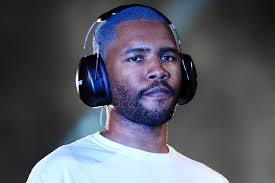

ABOUT THE ARTIST
Frank Ocean has been one of the more fascinating artists of the 2010s. A singer and songwriter whose output has defied rigid classification as R&B, he has nonetheless pushed that genre forward with seemingly offhanded yet imaginatively detailed narratives in which he has alternated between yearning romantic and easygoing braggart. Ocean debuted as a solo artist with "Novacane," a single regarding a fling that could be read, in part, as a criticism of commercial radio, yet it found a home on mainstream urban playlists. Despite further strained relations with music industry machinations, Channel Orange, his first proper album, made him a Grammy winner and performer, and once he left the major-label system, his commercial clout was greater than ever, as demonstrated by the chart-topping success of follow-up Blond.